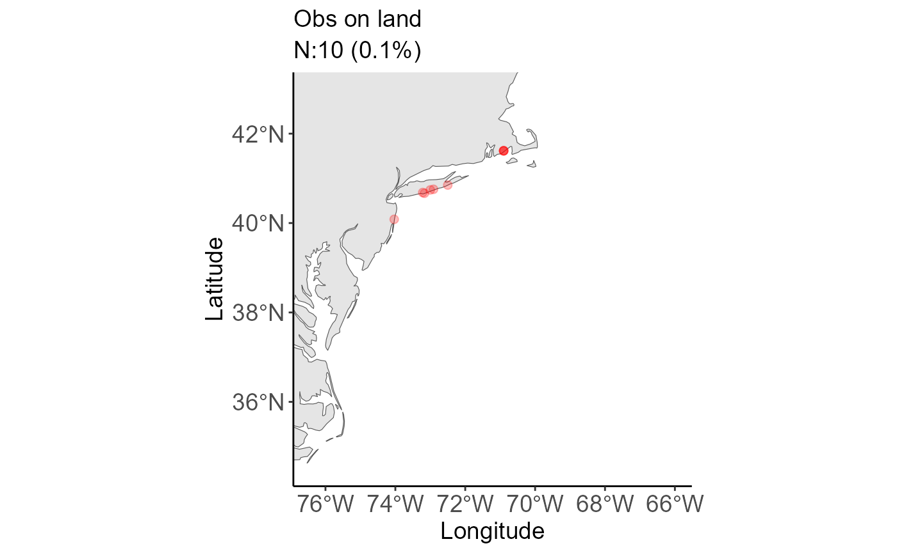
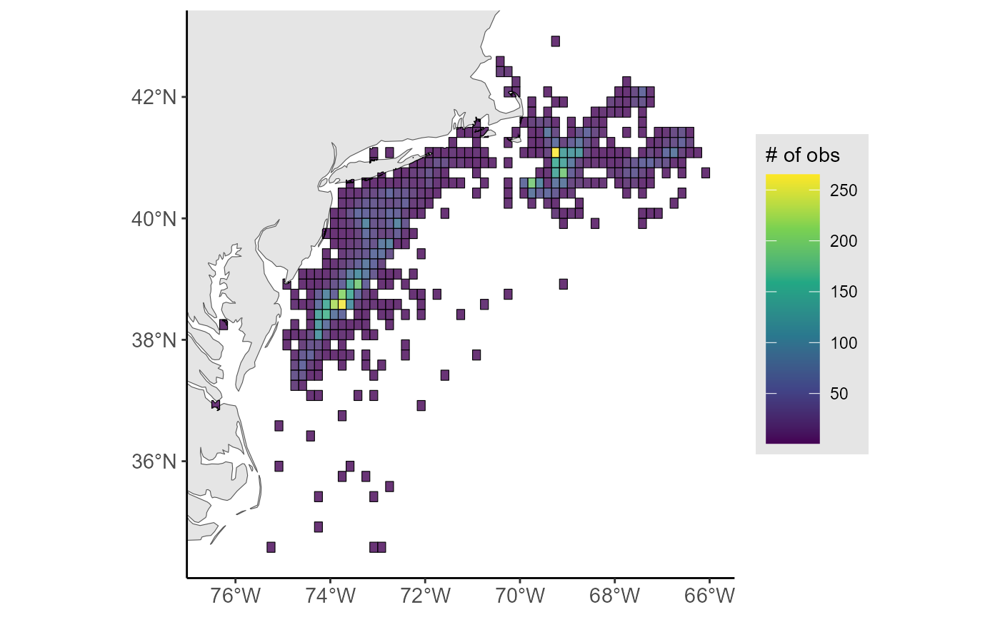
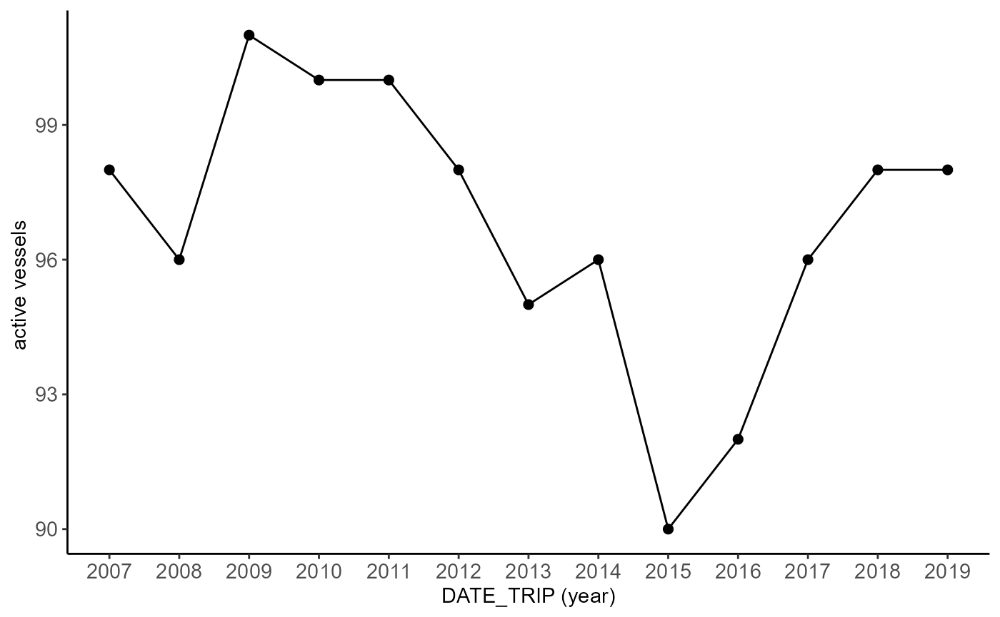
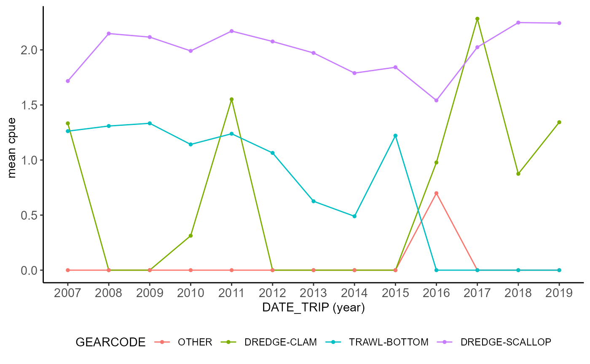

Overview
This vignette walks through the core FishSET workflow on the bundled scallop example data. It starts with raw data loading, moves through QA/QC and data reshaping, and ends with model fitting and diagnostics.
Setup and data loading
We first load FishSET and the example datasets, then place the project in a temporary working folder so the vignette can run without user-specific paths. This keeps the example reproducible while still using the same database-backed workflow as a real project.
The example data cover three pieces of the workflow: trip-level records, port locations, and the zone polygons used to assign fishing choices. A quick look at their structure helps confirm the variables needed later in the workflow are present.
str(scallop[, c("TRIPID", "DATE_TRIP", "PERMIT.y", "DDLAT", "DDLON",
"ZoneID", "LANDED_OBSCURED", "DOLLAR_OBSCURED")])## tibble [10,000 × 8] (S3: tbl_df/tbl/data.frame)
## $ TRIPID : int [1:10000] 22 65 466 12 6 830 43 57 399 363 ...
## $ DATE_TRIP : POSIXct[1:10000], format: "2007-05-01 05:00:00" "2007-05-01 06:00:00" ...
## $ PERMIT.y : int [1:10000] 55 305 126 198 224 218 1 356 383 162 ...
## $ DDLAT : num [1:10000] 39 38.5 39.8 38.5 38.6 ...
## $ DDLON : num [1:10000] -73.7 -74.1 -72.5 -74.1 -73.9 ...
## $ ZoneID : num [1:10000] 387312 387446 397224 387446 387331 ...
## $ LANDED_OBSCURED: num [1:10000] 18273 14899 15277 16493 18945 ...
## $ DOLLAR_OBSCURED: num [1:10000] 124276 100568 106939 111328 135897 ...
str(scallop_ports)## tibble [40 × 3] (S3: tbl_df/tbl/data.frame)
## $ port_name: chr [1:40] "New Bedford city" "Newport News city" "Cape May city" "Township 2" ...
## $ lon : num [1:40] -70.9 -76.4 -74.9 -76.7 -75.1 ...
## $ lat : num [1:40] 41.6 37 38.9 35.1 38.3 ...
str(tenMNSQR, max.level = 1)## Classes 'sf' and 'data.frame': 5267 obs. of 10 variables:
## $ AREA : num 0.001 0.007 0.008 0.001 0 0.001 0.002 0 0.021 0.008 ...
## $ PERIMETER: num 0.175 0.774 0.522 0.131 0.038 0.244 0.229 0.045 0.757 0.684 ...
## $ TEN_ : num 2 3 4 5 6 7 8 9 10 11 ...
## $ TEN_ID : num 456412 456413 457315 456416 456416 ...
## $ LL : int 456421 456431 457351 456461 456461 456441 456451 457341 456432 457342 ...
## $ LAT : int 4555 4555 4555 4555 4555 4555 4555 4555 4545 4545 ...
## $ LON : int 6445 6435 7315 6405 6405 6425 6415 7325 6435 7325 ...
## $ TEMP : int 2 3 5 6 6 4 5 4 3 4 ...
## $ LOC : int 45556445 45556435 45557315 45556405 45556405 45556425 45556415 45557325 45456435 45457325 ...
## $ geometry :sfc_POLYGON of length 5267; first list element: List of 1
## ..- attr(*, "class")= chr [1:3] "XY" "POLYGON" "sfg"
## - attr(*, "sf_column")= chr "geometry"
## - attr(*, "agr")= Factor w/ 3 levels "constant","aggregate",..: NA NA NA NA NA NA NA NA NA
## ..- attr(*, "names")= chr [1:9] "AREA" "PERIMETER" "TEN_" "TEN_ID" ...Now we load the raw data into FishSET using a single project name. The functions save each table to the project database and make the working table available in the R session for the next steps.
load_maindata(dat = scallop, project = project, over_write = TRUE)## Table saved to database##
## ! Data saved to database as scallop_vignetteMainDataTable20260807 (raw) and scallop_vignetteMainDataTable (working).
## Table is also in the working environment. !
load_port(dat = scallop_ports, port_name = "port_name", project = project)## Port table saved to database
load_spatial(spat = tenMNSQR, project = project, name = "tenMNSQR")## Writing layer `scallop_vignettetenMNSQRSpatTable' to data source
## `C:\Users\Paul.Carvalho\AppData\Local\Temp\Rtmpcl6DMi//scallop_vignette/data/spat/scallop_vignettetenMNSQRSpatTable.geojson' using driver `GeoJSON'
## Writing 5267 features with 9 fields and geometry type Polygon.
## Writing layer `scallop_vignettetenMNSQRSpatTable20260807' to data source
## `C:\Users\Paul.Carvalho\AppData\Local\Temp\Rtmpcl6DMi//scallop_vignette/data/spat/scallop_vignettetenMNSQRSpatTable20260807.geojson' using driver `GeoJSON'
## Writing 5267 features with 9 fields and geometry type Polygon.## Spatial table saved to project folder as scallop_vignettetenMNSQRSpatTableQuality assurance and quality control
We begin QA/QC by checking for missing values in the columns that matter for modeling. Removing those rows up front ensures the later formatting and model-fitting steps do not fail on incomplete observations.
scallop_clean <- na_filter(
dat = "scallop_vignetteMainDataTable",
project = project,
x = c("previous_port_lon", "previous_port_lat", "ZoneID"),
remove = TRUE,
over_write = TRUE
)## The following columns contain NAs: previous_port_lat, previous_port_lon, port_name. Consider using na_filter to replace or remove NAs.
## ZoneID do not contain NAs.All rows containing NAs have been removed from the dataframe.Next we run the spatial checks to identify observations that fall on land or outside the intended zone domain. This also parses the date column so we can summarize spatial issues over time. Note: removing observations on land or outside the zone polygons is easier in the FishSET GUI.
qaqc_out <- spatial_qaqc(
dat = "scallop_vignetteMainDataTable",
project = project,
spat = "scallop_vignettetenMNSQRSpatTable",
lon.dat = "DDLON",
lat.dat = "DDLAT",
date = "DATE_TRIP"
)## Warning: Spatial reference EPSG codes for the spatial and primary datasets do not match.
## The detected projection in the spatial file will be used unless epsg is specified.## Spherical geometry (s2) switched off## although coordinates are longitude/latitude, st_intersects assumes that they
## are planar
## although coordinates are longitude/latitude, st_intersects assumes that they
## are planar## Warning: 10 observations (0.1%) occur on land.## although coordinates are longitude/latitude, st_intersects assumes that they
## are planar
## although coordinates are longitude/latitude, st_intersects assumes that they
## are planar## Warning: 696 observations (7%) occur on boundary line between regulatory zones.## 10 observations (0.1%) occur on land.
## 696 observations (7%) occur on boundary line between regulatory zones.
qaqc_out$spatial_summary## # A tibble: 13 × 6
## YEAR n EXPECTED_LOC ON_LAND ON_ZONE_BOUNDARY perc
## <int> <int> <int> <int> <int> <dbl>
## 1 2007 770 725 2 43 7.71
## 2 2008 819 768 0 51 8.20
## 3 2009 859 819 1 39 8.61
## 4 2010 863 808 1 54 8.65
## 5 2011 818 761 0 57 8.19
## 6 2012 784 745 0 39 7.85
## 7 2013 602 561 1 40 6.03
## 8 2014 523 487 1 35 5.24
## 9 2015 601 551 0 50 6.02
## 10 2016 680 616 0 64 6.81
## 11 2017 786 725 0 61 7.87
## 12 2018 895 829 0 66 8.97
## 13 2019 982 881 4 97 9.84
qaqc_out$land_plot
# Remove observations on land
scallop_spat_clean <- qaqc_out$dataset[which(qaqc_out$dataset$ON_LAND != TRUE), ]
# Removing extra variables that are no longer needed helps speed up the modeling process
cols_to_drop <- c("YEAR", "ON_LAND", "ON_ZONE_BOUNDARY", "EXPECTED_LOC")
scallop_spat_clean <- scallop_spat_clean[, !(names(scallop_spat_clean) %in% cols_to_drop)]
# Save updated data to FishSET database
load_maindata( scallop_spat_clean, project = project, over_write=TRUE)## Table saved to database##
## ! Data saved to database as scallop_vignetteMainDataTable20260807 (raw) and scallop_vignetteMainDataTable (working).
## Table is also in the working environment. !To see how the cleaned trips are distributed across zones, we summarize the observations against the ten-minute-square grid. The tabular output and static plot give a quick read on zone coverage before we reshape the data for modeling.
zone_out <- zone_summary(
dat = "scallop_vignetteMainDataTable",
spat = "scallop_vignettetenMNSQRSpatTable",
project = project,
zone.dat = "ZoneID",
zone.spat = "TEN_ID",
output = "tab_plot",
plot_type = "static",
dat_lon = "DDLON",
dat_lat = "DDLAT"
)
zone_out$table## # A tibble: 461 × 2
## ZoneID n
## <chr> <int>
## 1 416965 265
## 2 387332 259
## 3 387331 226
## 4 387322 209
## 5 406932 194
## 6 387314 193
## 7 406926 192
## 8 387446 164
## 9 406915 151
## 10 387323 148
## # ℹ 451 more rows
zone_out$plot
FishSET provides several other exploratory functions. Here are a few examples:
# Vessel count by year
vessel_count(scallop_vignetteMainDataTable,
project,
v_id = "PERMIT.y",
date = "DATE_TRIP",
period = "year",
type = "line",
output= "plot")## Joining with `by = join_by(DATE_TRIP)`## Warning: Setting row names on a tibble is deprecated.
# Scale LANDED_OBSCURED to thousands of pounds
scallop_vignetteMainDataTable$landed_thousands <-
scallop_vignetteMainDataTable$LANDED_OBSCURED / 1000
# Create Catch per Unit Effort variables
cpue_out <- cpue(dat =scallop_vignetteMainDataTable,
project,
xWeight = "landed_thousands",
xTime = "TRIP_LENGTH",
name = "cpue")## Warning: xWeight must a measurement of mass. CPUE calculated.## Warning: xTime should be a measurement of time. Use the create_duration
## function. CPUE calculated.
# Average CPUE by year and gear code
species_catch(cpue_out, project,
species = "cpue",
date = "DATE_TRIP",
group = "GEARCODE",
period = "year",
fun = "mean",
type = "line",
output= "plot")## Joining with `by = join_by(GEARCODE, DATE_TRIP)`
More FishSET functions can be found on the references page.
Prepare and format data
The model needs a centroid table so it can measure distances from the observed trip location to each alternative zone. Creating the zonal centroid table also confirms that the spatial data and the trip zones line up correctly.
zone_centroid <- create_centroid(
spat = "scallop_vignettetenMNSQRSpatTable",
project = project,
spatID = "TEN_ID",
type = "zonal centroid",
output = "centroid table"
)## Warning in find_centroid(spat = spatdat, project = project, spatID = spatID, :
## Duplicate centroids found for at least one zone. Using first centroid.## Geographic centroid saved to fishSET databaseWe then define two alternative-choice sets with different minimum-haul filters. Using two versions lets us compare how the available choice set changes as we tighten the inclusion rules.
create_alternative_choice(
dat = "scallop_vignetteMainDataTable",
project = project,
alt_name = "alt1",
zoneID = "ZoneID",
occasion = "lon-lat",
occasion_var = c("previous_port_lon", "previous_port_lat"),
alt_var = "zonal centroid",
min_haul = 5
)## Alternative choice list 'alt1' saved to FishSET database under table scallop_vignetteAltMatrix
create_alternative_choice(
dat = "scallop_vignetteMainDataTable",
project = project,
alt_name = "alt2",
zoneID = "ZoneID",
occasion = "lon-lat",
occasion_var = c("previous_port_lon", "previous_port_lat"),
alt_var = "zonal centroid",
min_haul = 200
)## Alternative choice list 'alt2' saved to FishSET database under table scallop_vignetteAltMatrixExpected catch matrices translate the recent catch history into moving window averages for model inputs. We create one matrix for each alternative-choice definition so the later model specification can use the matching expectation set.
create_expectations(
dat = "scallop_vignetteMainDataTable",
project = project,
name = "exp_catch1",
alt_name = "alt1",
catch = "LANDED_OBSCURED",
temp_var = "DATE_TRIP",
temporal = "daily",
temp_window = 7,
day_lag = 1,
year_lag = 0,
empty_catch = NA,
empty_expectation = 1e-4
)## Expected catch/revenue matrix saved to FishSET database
create_expectations(
dat = "scallop_vignetteMainDataTable",
project = project,
name = "exp_catch2",
alt_name = "alt2",
catch = "LANDED_OBSCURED",
temp_var = "DATE_TRIP",
temporal = "daily",
temp_window = 7,
day_lag = 1,
year_lag = 0,
empty_catch = NA,
empty_expectation = 1e-4
)## Expected catch/revenue matrix saved to FishSET databaseThe formatted data step reshapes the project tables into the long
format used by the RTMB model code within fishset_fit(). We
keep the variables needed for the choice model and distance calculation,
then repeat the process for the second alternative-choice set.
format_model_data(
project = project,
name = "format_1",
alt_name = "alt1",
zone_id = "ZoneID",
unique_obs_id = "TRIPID",
select_vars = c("TRIPID", "DATE_TRIP", "ZoneID", "LANDED_OBSCURED"),
expectations = "exp_catch1",
distance = TRUE,
distance_units = "mi"
)## Warning: CRS is not specfied, distance matrix will be created using WGS 84
## (4326).## Warning: package 'sf' was built under R version 4.5.3## Linking to GEOS 3.14.1, GDAL 3.12.1, PROJ 9.7.1; sf_use_s2() is FALSE## Design object saved to: C:\Users\Paul.Carvalho\AppData\Local\Temp\Rtmpcl6DMi//scallop_vignette/Models/FormattedData/scallop_vignetteLongFormatData.qs2
format_model_data(
project = project,
name = "format_2",
alt_name = "alt2",
zone_id = "ZoneID",
unique_obs_id = "TRIPID",
select_vars = c("GEARCODE", "ZoneID", "DOLLAR_OBSCURED", "LANDED_OBSCURED"),
expectations = "exp_catch2",
distance = TRUE,
distance_units = "mi"
)## Warning: CRS is not specfied, distance matrix will be created using WGS 84
## (4326).## Design object saved to: C:\Users\Paul.Carvalho\AppData\Local\Temp\Rtmpcl6DMi//scallop_vignette/Models/FormattedData/scallop_vignetteLongFormatData.qs2Model design and fit
The first design is a standard conditional logit with expected catch and distance as fixed effects. The second adds area-specific constants so we can compare a more flexible zonal logit specification.
fishset_design(
formula = chosen ~ exp_catch1 + distance,
project = project,
model_name = "clogit1",
formatted_data_name = "format_1",
unique_obs_id = "TRIPID",
zone_id = "ZoneID",
scale = TRUE
)## Design object saved to: C:\Users\Paul.Carvalho\AppData\Local\Temp\Rtmpcl6DMi//scallop_vignette/Models/ModelDesigns/clogit1.qs2
fishset_design(
formula = chosen ~ exp_catch2 + distance + ZoneID,
project = project,
model_name = "zlogit1",
formatted_data_name = "format_2",
unique_obs_id = "TRIPID",
zone_id = "ZoneID",
scale = TRUE
)## Design object saved to: C:\Users\Paul.Carvalho\AppData\Local\Temp\Rtmpcl6DMi//scallop_vignette/Models/ModelDesigns/zlogit1.qs2The model-fitting step can take longer than a vignette render budget, so we keep the fitting code in the document but do not evaluate it here. This still shows the exact commands a user would run locally to estimate and print both model tables. The printed tables include estimated coefficients, standard errors, p-values, log-likelihood, AIC, Pseudo R2, and accuracy.
clogit1_fit <- fishset_fit(project = project, model_name = "clogit1")
print(clogit1_fit)
zlogit1_fit <- fishset_fit(project = project, model_name = "zlogit1")
print(zlogit1_fit)Model diagnostics and validation
Once the fits exist, we can test the IIA assumption with the Hausman-McFadden test and then check whether residuals show spatial correlation. These diagnostics help determine whether the final model is well specified.
clogit1_iia <- fishset_iia_test(project = project, model_name = "clogit1")
print(clogit1_iia)
zlogit1_iia <- fishset_iia_test(project = project, model_name = "zlogit1")
print(zlogit1_iia)
clogit1_resid <- model_resid_corr(
project = project,
model_name = "clogit1",
spat = "scallop_vignettetenMNSQRSpatTable",
spat_id = "TEN_ID")
print(clogit1_resid)
plot(clogit1_resid)
zlogit1_resid <- model_resid_corr(
project = project,
model_name = "zlogit1",
spat = "scallop_vignettetenMNSQRSpatTable",
spat_id = "TEN_ID"
)
print(zlogit1_resid)Reproducibility
FishSET was designed with the aim of reproducibility. All function
calls are logged in a dated file. Log files are stored in the
src folder. Each log call has a functionID and a list of
parameters supplies (args). Some logged functions includes kwargs,
optional arguments, an output, or a message. The message section is used
to save text output from a function call that users may want to
reference later, such as the number of number of rows with missing
data.
For example, the function call
filter_table(dat = 'scallop_vignetteMainDataTable',
project = project,
x = 'GEARCODE',
exp = 'GEARCODE==1')returns the following log entry:
{
"functionID": "filter_table",
"args": [
"scallop_vignetteMainDataTable",
"scallop_vignette",
"GEARCODE",
"GEARCODE=='DREDGE-SCALLOP'"
],
"kwargs": [],
"output": "",
"msg": [
{
"dataframe": "scallop_vignetteMainDataTable",
"vector": "GEARCODE",
"FilterFunction": "GEARCODE=='DREDGE-SCALLOP'"
}
]
}Log entries are written in JSON. Future version of FishSET will include a function that will read the log files and rerun function calls with current or updated data.
Logging is built into FishSET functions. However, it is possible to
start a new log file using log_reset. New log files are
started each day. User-created functions, such as likelihoods, can be
saved for future use and logged using log_func_model.